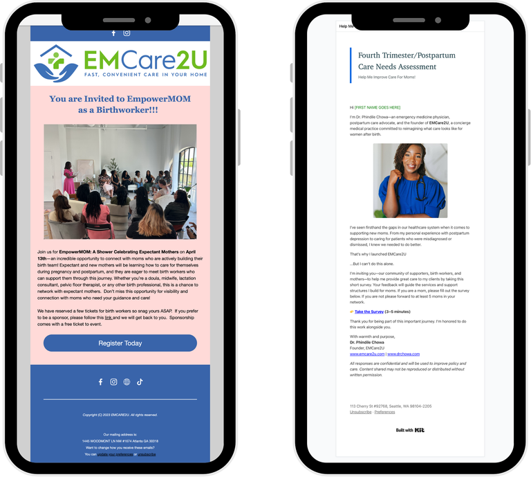
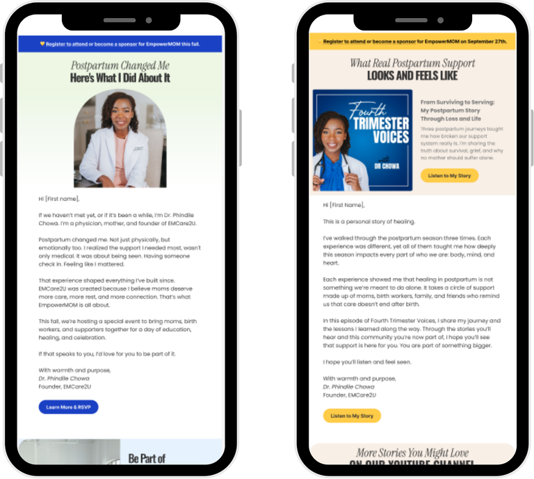
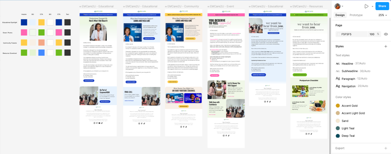
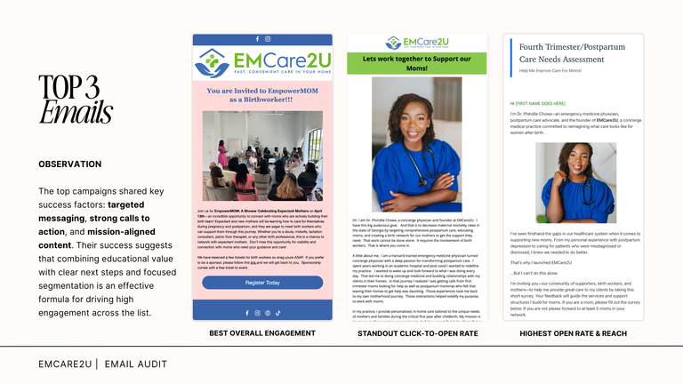
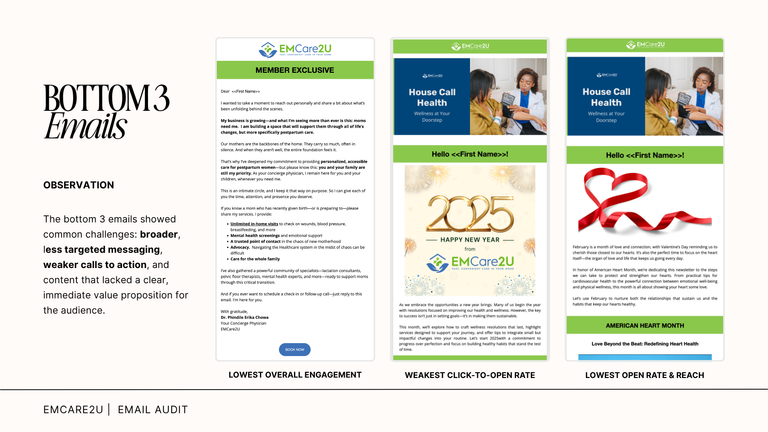
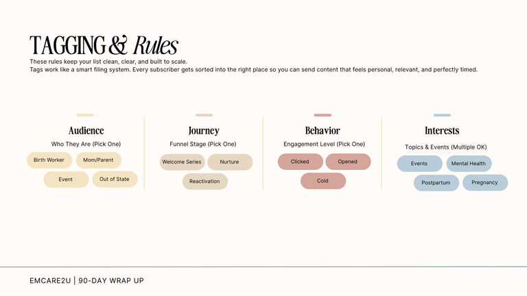
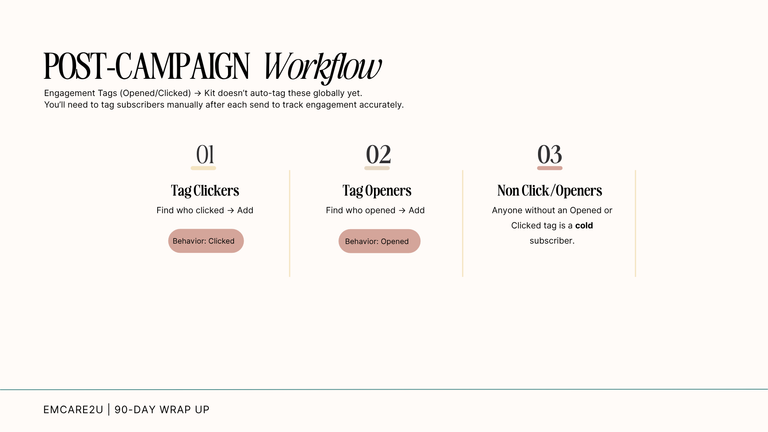
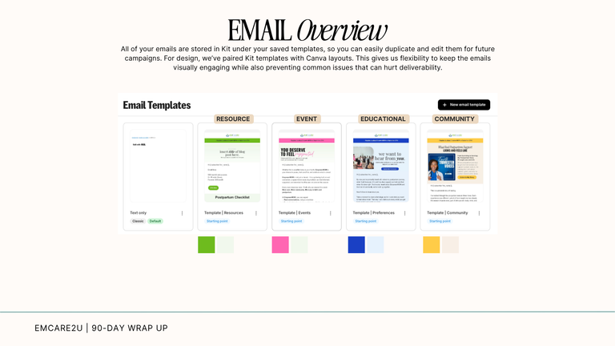

Rebuilding a Cold-Audience Lifecycle System to Drive Trust and Event Conversion

A fragmented email program was redesigned into a segmented, trust-first lifecycle system for EMCare2U, a maternal health community.
- Client: EMCare2U
- Role: Lead CX/Lifecycle Strategist & Implementer (strategy through execution)
- Timeline: Audit Jan–Jul 2025 → reactivation sequence launched, with results tracked through Sep 2025 (later signal into Apr 2026)
- Tools: Figma (email design), Whimsical (journey mapping), Airtable (performance analysis), Kit/ConvertKit (segmentation, tagging, and send platform)
- Scope: Lifecycle architecture, audience segmentation/tagging system, messaging strategy, CRM email implementation
Snapshot Overview
EMCare2U's email program was operating as a broadcast channel, not a lifecycle system. Campaigns were sent broadly and inconsistently, audience segments overlapped or went unused, and messaging didn't differentiate between moms and birth workers at different stages of trust. Performance was uneven, and the underlying assumption — that low event attendance meant the organization needed to promote harder — was untested.
This project reframed the problem: the audience wasn't just under-engaged, it was cold, under-segmented, and being asked for commitment before trust had been re-established. The resulting work replaced ad hoc sends with a tagging and journey architecture (audience, journey stage, behavior, interest), sequenced around a trust-first reactivation path rather than immediate promotion. The system was designed, built, and shipped by one person, then measured against both email behavior and downstream event registration.
{kind=link}

{kind=link}

The Problem
System problem The email program had no lifecycle logic. Segments were incomplete and overlapping across moms, birth workers, attendees, and members. There was no tagging structure to route contacts based on behavior or interest, so every send functioned as a one-off rather than part of a journey.
User experience problem Messaging treated dissimilar audiences the same way. Promotional asks (buy a ticket, attend an event) arrived before enough context, relevance, or emotional trust had been established — creating a mismatch between where the audience actually was and what was being asked of them.
Business constraint The organization needed to grow event attendance and partnerships now, which created pressure to keep promoting into a cold list — the opposite of what the underlying engagement data supported. Any redesign had to improve structure without stalling near-term business momentum.
My Role
Owned end-to-end:
- Lifecycle strategy and customer journey architecture
- Messaging strategy and narrative approach
- Audience segmentation and tag taxonomy
- Email sequence cadence and campaign structure
- Success metrics and optimization plan
- Stakeholder recommendations
Stakeholder involvement: Dr. Chowa was the sole stakeholder; she reviewed and approved the strategy. There was no broader internal team on this engagement, so it's represented here as an individually-led effort, not a cross-functional collaboration.
Designed and executed: This was not a strategy-only engagement. I built the emails in Figma, mapped the journey in Whimsical, analyzed performance in Airtable, and implemented the sequence directly in the platform — the same person carrying the plan from decision to shipped experience.
{kind=link}

Process
1. Audit & System Diagnosis
Goal: Understand why engagement was uneven, not just that it was.
Analyzed: Campaign timing, segmentation, CTA clarity, content type, audience behavior across Jan–Jul 2025.
Decision: Treat this as a systems problem, not a copywriting problem.
Why it mattered: Set the frame for everything downstream — the fix needed to be structural.
{kind=link}
2. Insight Synthesis
Goal: Identify what actually drove performance differences.
Analyzed: Top vs. bottom-performing campaigns, send-time performance, list behavior patterns.
Decision: Prioritize relevance and trust-sequencing over send frequency or volume. Why it mattered: Countered the default instinct to "promote harder" into a cold list.
{kind=link}

{kind=link}

{kind=link}

{kind=link}

4. Messaging / Narrative Architecture
Goal: Rebuild trust before asking for commitment.
Designed: A four-part story-led sequence, each email built around a single theme — Education → Community → Events → Resources — with single-CTA discipline per send. Emails were spaced roughly three weeks apart to build momentum without triggering fatigue.
Decision: Sequence trust-building content ahead of ticket-sales asks, and pace it deliberately rather than sending in a tight burst.
Why it mattered: Directly addressed the mismatch between audience readiness and what was being asked of them, while the spacing protected the reactivation from becoming its own source of disengagement.
{kind=link}
{kind=link}
5. Implementation
Goal: Ship the strategy without dilution through handoff.
Executed: Emails built in Figma, journey mapped in Whimsical, sequence implemented directly in-platform.
Decision: Own execution personally rather than hand off to a separate production step. Why it mattered: Reduced the risk of the strategy degrading between plan and delivery.
{kind=link}

6. Measurement & Iteration
Goal: Validate the system against both email and business signals.
Analyzed: Opens, clicks, click-to-open rate, unsubscribes, bounce rate, and post-campaign tagging of clickers/openers/non-engaged.
Decision: Build post-send tagging workflows so future campaigns inherit the segmentation instead of resetting each time.
Why it mattered: Turned a single campaign into a durable, self-updating system.
Key UX Insights
- Broad, unsegmented sends suppress engagement even when message quality is high — relevance, not reach, drove performance.
- A cold audience responds poorly to immediate conversion asks; trust has to be re-established before higher-commitment requests will land. A vulnerable, first-person subject line ("Postpartum Changed Me") on the first reactivation email produced the sequence's highest click-to-open rate — evidence that authenticity, not polish, was the trust signal this audience responded to.
- Send timing is a structural lever, not a minor optimization — narrow windows (9–11am, 3–4pm ET) meaningfully outperformed the rest of the day.
- Single-CTA discipline outperforms diffuse, multi-ask messaging, especially early in a reactivation sequence.
- Segmentation only creates lasting value when it's built as an ongoing tagging system (behavior + interest + journey stage), not a one-time list cut.
- Reactivation should precede list cleaning — pruning a cold list before attempting to re-engage it destroys recoverable value.
- Engagement problems that look like content or copy issues are often lifecycle and sequencing issues in disguise.
Solution
The rebuilt system replaced one-off broadcast sends with a lifecycle architecture built in Kit (ConvertKit) and organized around four tag categories: audience (birth worker, mom/parent), journey stage (welcome, nurture, reactivation), behavior (opened, clicked, event signup, cold), and interest (events, mental health, postpartum, pregnancy).
The reactivation sequence sits at the center of this system as the bridge between a cold, untagged list and future nurture or event-conversion paths. Rather than leading with promotion, the sequence is paced to deliver value and rebuild emotional relevance first, using single-CTA messaging per email so each send asks for one clear, appropriately-scaled action.
Post-send, contacts are tagged based on behavior (clicked, opened, non-engaged), feeding them into differentiated follow-up paths instead of being reabsorbed into the general list. This closes the loop: segmentation informs messaging, messaging generates behavioral data, and that data re-segments the audience for the next cycle — turning what was a static list into a system that updates itself.
Impact
Behavioral impact
- Open rates up to 46.2%; click-to-open rates up to 11.5%
- First-email click-through rate of 4.3%
- Unsubscribe rate held below 0.3%; bounce rate around 1.0–1.2%
- Performance held consistently across all four emails in the sequence while reaching 744–803 recipients per send, compared to 19–147 recipients in prior fragmented campaigns
Business impact
- EmpowerMOM ticket sales: 21 (Jan 2025) → 25 (Apr 2025) → 184 (Sep 2025) → 275 (Apr 2026)
- The redesigned lifecycle system coincided with this growth; email strategy alone should not be read as the sole cause, but the trust-first, segmented approach plausibly contributed to stronger conditions for registration by improving relevance and audience structure ahead of each event.
Reflection
What worked: Resequencing the funnel — trust before conversion — was the right call against the instinct to promote harder into a cold audience. The segmentation and tagging architecture gave the system a way to keep improving itself after launch, rather than resetting with every campaign.
What I'd improve: The discovery phase relied on campaign analytics and business goals rather than direct qualitative input. Talking to moms, birth workers, or attendees directly would have sharpened both the messaging and the journey design further.
What this taught me: Engagement problems are frequently misdiagnosed as content problems. The deeper issue is usually trust, audience fit, and sequencing — and the fix is a system, not a better email.
Skills Demonstrated
- Systems Thinking
- Lifecycle Strategy & Design
- Customer Journey Architecture
- Audience Segmentation & Information Architecture
- Behavioral Analysis
- Messaging Architecture
- Research Synthesis
- Measurement Design
- Problem Framing
- Stakeholder Communication